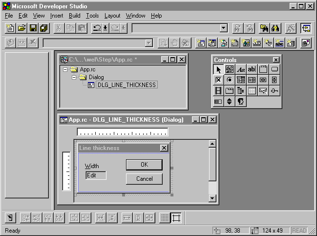
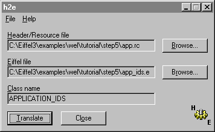
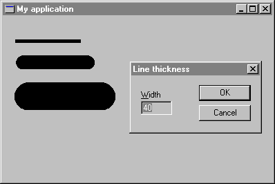

Step 5: Changing line thickness
At this point, you can draw only thin lines. In order to change line thickness, you have to change the thickness of the pen the application use to draw lines. In this step, you will learn how to set new tools in a display context and how to create a dialog box.
You will use a dialog box to provide a mechanism for the user to change the line thickness. Figure 6 shows the dialog box.
Figure 6

There are 2 methods to include a dialog box in your application:
- Using resources
- Writing Eiffel code
The first method consists of using Windows resources capabilities works only with the Professional version of ISE Eiffel since resources are linked to the program's executable file. This solution needs a linker, a resource compiler and a resource editor which are shipped with your C-compiler. Resources compilation process is completely integrated to Professional ISE Eiffel 3 for Windows and fully transparent for the user. You just need to put a resource file in the project directory, start a Freeze (or Finalize) operation, and EiffelBench does the rest. In a nutshell, the freeze or finalization process will automatically copy the resource file from the project directory into the \EIFGEN\[W|F]_CODE directory and will link it to the executable file. Once the resource file is linked to your executable you can just Melt your project. You will need to Freeze again if you change or add any resources. This method is much easier and quicker than the second because it is usually easier to use a visual tool to design a dialog box or a menu instead of writing Eiffel code. One of the most important advantages of resources is that you can change them without touching Eiffel code. It is clear that this is the preferred method if you are a Professional ISE Eiffel 3 for Windows user. You will see later in details how to create and use a resource file in WEL.
The second method consists of writing an Eiffel class which creates each visual component of the dialog box with the right positions and dimensions. Typically, if you use Personal ISE Eiffel 3 for Windows you will choose this method since the Personal version does not allow to produce a stand-alone executable file.
Both methods will be explain in details in the following sections.
Method 1: Using resources
Resources are data stored in a program's executable file, but stored separately from the program's normal data segment. Typically, Windows leaves resources on disk when it loads an application into memory, and loads individual resources as it needs them during execution. You've probably noticed dynamic loading of resources when working with Windows programs. When you invoke a program's dialog box for the first time, Windows usually accesses the disk to copy the dialog box resource from the program's .EXE file into memory. Of course, if you want the resource to be loaded when the program is loaded, or if you don't want Windows to be able to discard the resource from memory, you can change its attributes (for more details, see your resource editor manual). These are the resources you will create and use most often:
- Menus
- Dialog boxes
- Icons
- Cursors
- Keyboard accelerators
- Bitmaps
- Character strings
You can create resources visually using a resource editor as Borland Resource Workshop, Microsoft Developer Studio, or Watcom resource editor. See your resource editor manual to learn how to create a resource file.
For instance, Figure 7 shows Borland Resource Workshop after the dialog box thickness has been created and Figure 8 shows the same with Microsoft Developer Studio.
Figure 7

Figure 8

No matter what resource editor tool you want to use to design the line thickness dialog box, you should obtain a resource file like the following (app.rc).
The DIALOG statement defines a window that an application can use to create dialog boxes. The statement defines the position and dimensions of the dialog box on the screen as well as the dialog box style. control-statement defines the controls of the dialog box.#include <windows.h>#define DLG_LINE_THICKNESS 1#define IDC_EDIT_WIDTH 101DLG_LINE_THICKNESS DIALOG 98, 38, 124, 49STYLE DS_MODALFRAME | WS_POPUP | WS_VISIBLE | WS_CAPTION | WS_SYSMENUCAPTION "Line thickness"FONT 8, "MS Sans Serif"{LTEXT "&Width", -1, 9, 12, 22, 8EDITTEXT IDC_EDIT_WIDTH, 9, 22, 30, 12, WS_BORDER | WS_GROUP | WS_TABSTOPDEFPUSHBUTTON "OK", IDOK, 65, 8, 50, 14, BS_DEFPUSHBUTTON | WS_GROUP | WS_TABSTOPPUSHBUTTON "Cancel", IDCANCEL, 65, 26, 50, 14, WS_GROUP | WS_TABSTOP}
nameID DIALOG [ load-mem] x, y, width, height [optional-statements] BEGIN control-statement . . . END
Important note: The resource file needs to be present in the project directory and its name must be the same as the system name specified in the Ace file with the .RC extension.
As you see at the beginning of the resource file, two identifiers (DLG_LINE_THICKNESS and IDC_EDIT_WIDTH) are declared. You will use them to identify the dialog box and the edit control since a resource file may contain several dialog boxes and one dialog box may contains several controls. WEL provides a simple tool to extract identifiers from a resource file (.RC) or a header file (.H) to make an Eiffel class which contains a set of constants. If you change or add any identifiers in the resource file, make sure to update your Eiffel class as well. After running this tool named H2E (available in $EIFFEL3\UTIL) with your resource file, you will obtain the following class:
indexing description: "Generated by h2e from the file C:\Eiffel3\examples\wel\tutorial\step5\app.rc." class APPLICATION_IDS feature -- Access Dlg_line_thickness: INTEGER is 1; Idc_edit_width: INTEGER is 101; end -- class APPLICATION_IDSFigure 9 shows the values entered in H2E in order to obtain the above file.
Figure 9

Note: If you use Microsoft Developer Studio, identifiers are saved in file `resource.h'. In this case, specify this file and not the resource file.
Now, you will learn how to make the connection between this dialog box specified in the resource file and your application. You will create a new class inherited from the class WEL_MODAL_DIALOG to load and use the line thickness dialog box. This class will do the following tasks:
- Load the dialog box from the resource and create an edit control. See make routine.
- Set the single line edit control Width with the value previously entered by the user (The first time, this value will be equal to 1). See setup_dialog routine.
- If the new width entered by the user is a valid integer, save the value in pen_width and terminate the dialog box. See on_ok routine.
The full text of this class is: (Note that the class APPLICATION_IDS generated by H2E is added in the inheritance clause.)
class
LINE_THICKNESS_DIALOG
inherit
WEL_MODAL_DIALOG
redefine
on_ok, setup_dialog
end
APPLICATION_IDS
export
{NONE} all
end
creation
make
feature {NONE} -- Initialization
make (a_parent: WEL_COMPOSITE_WINDOW) is
-- Make the dialog box and create edit.
do
make_by_id (a_parent, Dlg_line_thickness)
!! edit.make_by_id (Current, idc_edit_width)
pen_width := 1
end
feature -- Access
edit: WEL_SINGLE_LINE_EDIT
-- Edit control to enter pen width
pen_width: INTEGER
-- Pen width entered
feature {NONE} -- Implementation
setup_dialog is
-- Set the width previously entered.
local
s: STRING
do
!! s.make (0)
s.append_integer (pen_width)
edit.set_text (s)
end
on_ok is
-- Ensure edit value is an integer, save it in
-- pen_width and close the dialog box.
do
if edit.text.is_integer then
pen_width := edit.text.to_integer
terminate (idok)
end
end
end -- class LINE_THICKNESS_DIALOG
Method 2: Writing Eiffel code
If you use Personal ISE Eiffel, you need to create the following class:
class LINE_THICKNESS_WINDOW
inherit
WEL_FRAME_WINDOW
redefine
on_control_command, background_brush
end
create
make
feature {NONE} -- Initialization
make (a_parent: WEL_COMPOSITE_WINDOW) is
-- Make the line thickness window.
do
make_child (a_parent, "Line thickness")
move_and_resize (20, 20, 190, 104, true)
set_style (style + ws_popup - ws_minimizebox - ws_maximizebox)
create static. make (Current, "Width", 14, 18, 38, 13, - 1)
create edit. make (Current, "", 14, 33, 52, 21, - 1)
create ok_button. make (Current, "OK", 98, 12, 77, 23, - 1)
create cancel_button. make (Current, "Cancel", 98, 45, 77, 23, - 1)
pen_width := 1
static. set_font (gui_font)
ok_button. set_font (gui_font)
cancel_button. set_font (gui_font)
edit. set_font (gui_font)
end;
feature -- Access
edit: WEL_SINGLE_LINE_EDIT;
-- Edit control to enter pen width
ok_button: WEL_PUSH_BUTTON;
-- Button to validate the value
cancel_button: WEL_PUSH_BUTTON;
-- Button to cancel the value
static: WEL_STATIC;
-- "Width" static text
pen_width: INTEGER;
-- Pen width entered
background_brush: WEL_BRUSH is
-- Dialog boxes background color is the same than
-- button color.
once
create Result. make_by_sys_color (color_btnface + 1)
end;
feature -- Basic operations
activate is
-- Activate the window
local
s: STRING
do
create s. make (0);
s. append_integer (pen_width);
edit. set_text (s);
show
end;
feature {NONE} -- Implementation
on_control_command (control: WEL_CONTROL) is
-- Process ok_button and cancel_button selection.
local
p: MAIN_WINDOW
do
if control = ok_button then
if edit. text. is_integer then
pen_width := edit. text. to_integer;
p ?= parent;
if p /= void then
p. set_pen_width (pen_width)
end;
hide
end
elseif control = cancel_button then
hide
end
end;
gui_font: WEL_DEFAULT_GUI_FONT is
-- Default font used to draw dialogs.
once
create Result. make
end;
end -- class LINE_THICKNESS_WINDOW
In order to be able to change line thickness in the device context, you need to add the following attribute:
pen: WEL_PEN -- Pen currently selected in dcYou also have to set the default pen width in the make routine:
make is
-- Make the main window.
do
make_top ("My application")
!! dc.make (Current)
set_pen_width (1)
end
The implementation of set_pen_width is defined as follows:
set_pen_width (new_width: INTEGER) is -- Set pen width with new_width. do !! pen.make_solid (new_width, black) end
The black color can be retrieved from the class WEL_STANDARD_COLORS which must be added in the inheritance clause.
You have to insert a call to select_pen in the routine on_left_button_down as follows. Selecting a pen for a device context will allow you to use a different pen than the default one.
on_left_button_down (keys, x_pos, y_pos: INTEGER) is -- Initiate the drawing process. do if not button_down then button_down := true dc.get dc.move_to (x_pos, y_pos) dc.select_pen (pen) end end
The new version of on_right_button will now bring up the dialog box:
According the version you use, you need to update the MAIN_WINDOW class in order to bring up the line thickness dialog box or window when the user pushes on the right button. If you use Professional ISE Eiffel 3 for Windows, you need to add a new attribute line_thickness_dialog and change the body of on_right_button_down as follows:
line_thickness_dialog: LINE_THICKNESS_DIALOG -- Dialog box to change line thickness
on_right_button_down (keys, x_pos, y_pos: INTEGER) is -- Bring up line_thickness_dialog and set the -- new pen width. do if line_thickness_dialog = void then !! line_thickness_dialog.make (Current) end line_thickness_dialog.activate if line_thickness_dialog.ok_pushed then set_pen_width (line_thickness_dialog.pen_width) end end
On the other hand, if you use Personal ISE Eiffel for Windows, you need to add a new attribute line_thickness_dialog and change the body of on_right_button_down as follows:
line_thickness_window: LINE_THICKNESS_WINDOW -- Window to change line thickness
on_right_button_down (keys, x_pos, y_pos: INTEGER) is -- Bring up line_thickness_window and set the -- new pen width. do if line_thickness_window = void then !! line_thickness_window.make (Current) end line_thickness_window.activate end
Figure 10 shows the new capabilities of your application:
Figure 10

This is the full text of MAIN_WINDOW (Professional version):
class
MAIN_WINDOW
inherit
WEL_FRAME_WINDOW
redefine
on_left_button_down, on_left_button_up,
on_right_button_down, on_mouse_move,
closeable
end
WEL_STANDARD_COLORS
export
{NONE} all
end
creation
make
feature {NONE} -- Initialization
make is
-- Make the main window.
do
make_top ("My application")
!! dc.make (Current)
set_pen_width (1)
end
feature -- Access
dc: WEL_CLIENT_DC
-- Device context associated to the current
-- client window
button_down: BOOLEAN
-- Is the left mouse button down?
pen: WEL_PEN
-- Pen currently selected in dc
line_thickness_dialog: LINE_THICKNESS_DIALOG
-- Dialog box to change line thickness
feature -- Element change
set_pen_width (new_width: INTEGER) is
-- Set pen width with new_width.
do
!! pen.make_solid (new_width, black)
end
feature {NONE} -- Implementation
on_left_button_down (keys, x_pos, y_pos: INTEGER) is
-- Initiate the drawing process.
do
if not button_down then
button_down := true
dc.get
dc.move_to (x_pos, y_pos)
dc.select_pen (pen)
end
end
on_mouse_move (keys, x_pos, y_pos: INTEGER) is
-- Connect the points to make lines.
do
if button_down then
dc.line_to (x_pos, y_pos)
end
end
on_left_button_up (keys, x_pos, y_pos: INTEGER) is
-- Terminate the drawing process.
do
if button_down then
button_down := false
dc.release
end
end
on_right_button_down (keys, x_pos, y_pos: INTEGER) is
-- Bring up line_thickness_dialog and set the -- new pen width.
do
if line_thickness_dialog = void then
!! line_thickness_dialog.make (Current)
end
line_thickness_dialog.activate
if line_thickness_dialog.ok_pushed then
set_pen_width (line_thickness_dialog.pen_width)
end
end
closeable: BOOLEAN is
-- Does the user want to quit?
local
msgBox: WEL_MSG_BOX
do
!! msgBox.make
msgBox.question_message_box (Current, "Do you want to quit?", "Quit")
Result := msgBox.message_box_result = Mb_ok
end
end -- class MAIN_WINDOW
This is the full text of MAIN_WINDOW (Personal version):
class
MAIN_WINDOW
inherit
WEL_FRAME_WINDOW
redefine
on_left_button_down, on_left_button_up,
on_right_button_down, on_mouse_move,
closeable
end
WEL_STANDARD_COLORS
export
{NONE} all
end
creation
make
feature {NONE} -- Initialization
make is
-- Make the main window.
do
make_top ("My application")
!! dc.make (Current)
set_pen_width (1)
end
feature -- Access
dc: WEL_CLIENT_DC
-- Device context associated to the current
-- client window.
button_down: BOOLEAN
-- Is the left mouse button down?
pen: WEL_PEN
-- Pen currently selected in dc.
line_thickness_window: LINE_THICKNESS_WINDOW
-- Window to change line thickness.
feature -- Element change
set_pen_width (new_width: INTEGER) is
-- Set pen width with new_width.
do
!! pen.make_solid (new_width, black)
end
feature {NONE} -- Implementation
on_left_button_down (keys, x_pos, y_pos: INTEGER) is
-- Initiate the drawing process.
do
if not button_down then
button_down := true
dc.get
dc.move_to (x_pos, y_pos)
dc.select_pen (pen)
end
end
on_mouse_move (keys, x_pos, y_pos: INTEGER) is
-- Connect the points to make lines.
do
if button_down then
dc.line_to (x_pos, y_pos)
end
end
on_left_button_up (keys, x_pos, y_pos: INTEGER) is
-- Terminate the drawing process.
do
if button_down then
button_down := false
dc.release
end
end
on_right_button_down (keys, x_pos, y_pos: INTEGER) is
-- Bring up line_thickness_window and set the
-- new pen width.
do
if line_thickness_window = void then
!! line_thickness_window.make (Current)
end
line_thickness_window.activate
end
closeable: BOOLEAN is
-- Does the user want to quit?
local
msgBox: WEL_MSG_BOX
do
!! msgBox.make
msgBox.question_message_box (Current, "Do you want to quit?", "Quit")
Result := msgBox.message_box_result = Mb_ok
end
end -- class MAIN_WINDOW